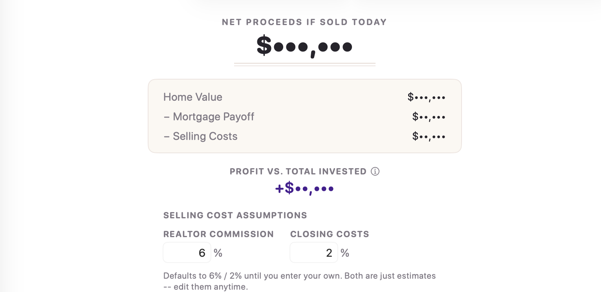
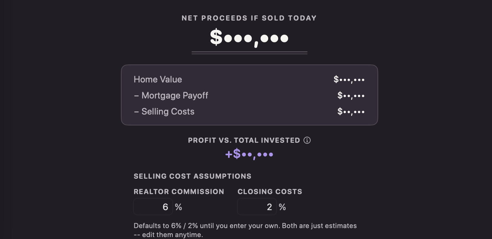
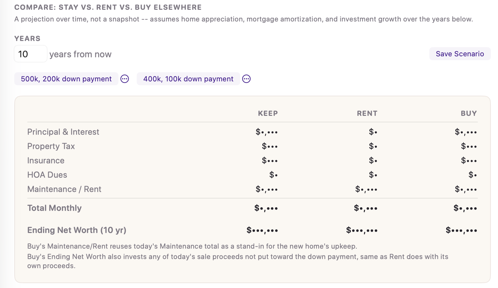
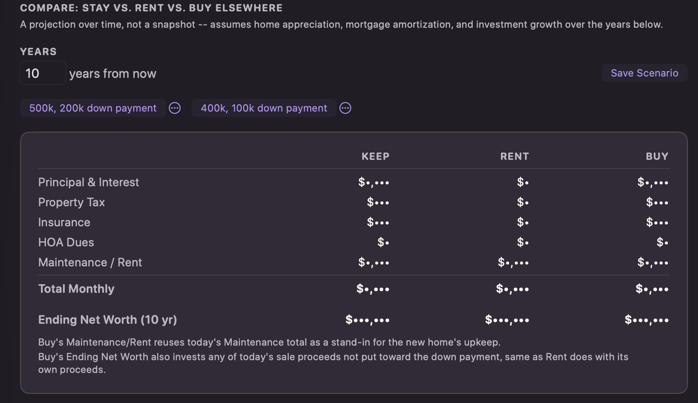
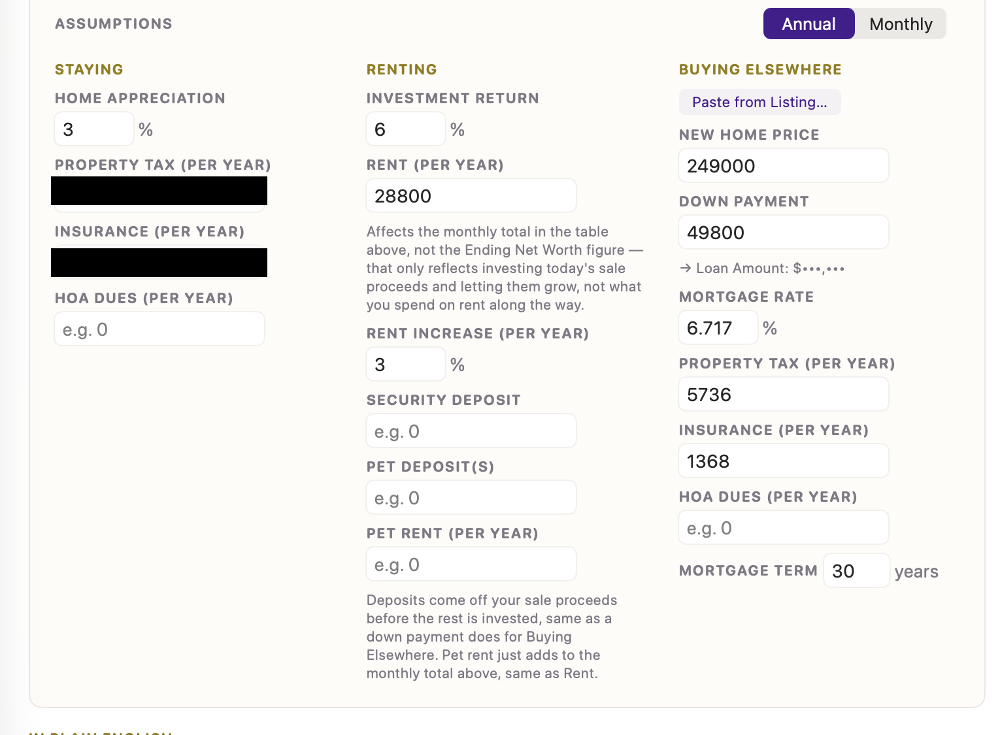
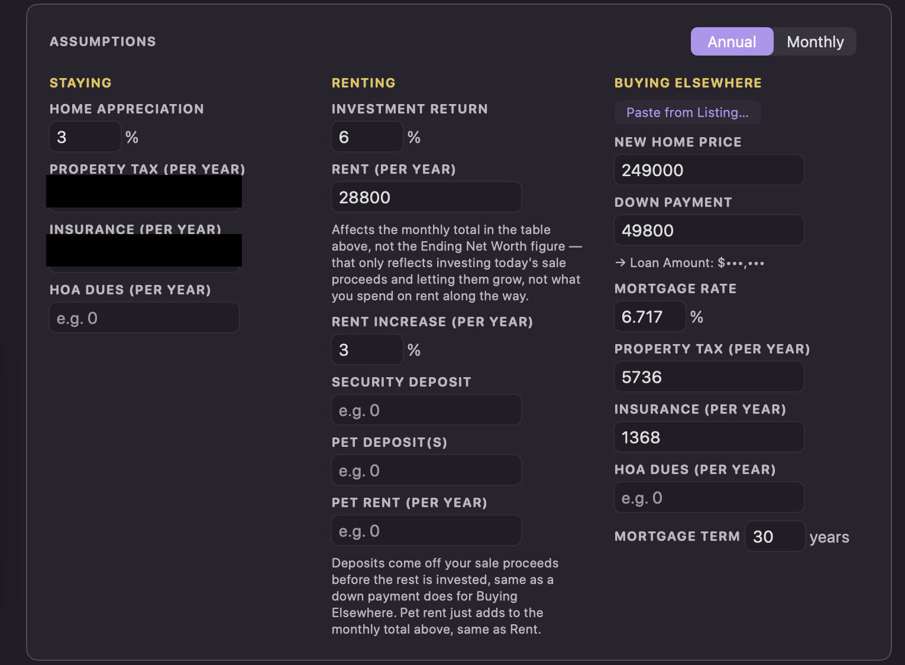
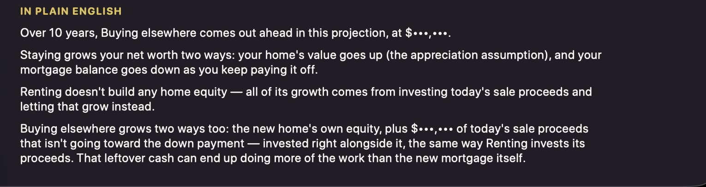

💰 Sell Scenario & Compare
Two questions in one tab: what would you actually walk away with if you sold today, and — looking years ahead — is staying, renting, or buying somewhere else the better move?
Net Proceeds If Sold Today


This is a snapshot of right now, not a projection. The math:
Home Value
− Mortgage Payoff
− Selling Costs (realtor commission + closing costs)
= Net Proceeds
Below that, Profit vs. Total Invested compares your Net Proceeds against everything you've actually put into the house — Purchase Price plus every Value-type Item you've logged. Selling Cost Assumptions lets you adjust the realtor commission and closing cost percentages (defaults to 6% and 2%, both just estimates you can edit anytime).
Compare: Stay vs. Rent vs. Buy Elsewhere
A real multi-year projection — not just today's numbers frozen in place. It accounts for home appreciation over time, your mortgage balance actually paying down, and investment growth on money that isn't tied up in a house. Set how many Years ahead to project, then fill in the assumptions for each of the three paths.


The results table: monthly costs and projected Ending Net Worth for each path.
The three columns
- Keep — staying put in this house
- Rent — selling and renting somewhere instead
- Buy — selling and buying a different house


Annual vs. Monthly entry
Property tax, insurance, HOA dues, and rent all have an Annual / Monthly toggle at the top of the Assumptions card. Flip it to match however your own paperwork quotes the number — a mortgage statement usually shows monthly, a tax bill usually shows annual. The app converts for you; nothing about your actual saved numbers changes, only how you're currently typing them.
Paste from Listing
Looking at a real house on Redfin or Zillow? Copy the payment calculator box straight off the listing page, click Paste from Listing… under Buying Elsewhere, and paste it in. The app reads the price, down payment, rate, term, tax, insurance, and HOA straight out of that text and fills in the fields for you.
Saved scenarios
Click Save Scenario to name and store the current set of assumptions, so you can flip between a few different what-ifs (a cheaper house vs. a nicer one, a longer vs. shorter time horizon) without retyping every number each time.
In Plain English
Every number above gets translated into a plain-language summary underneath the table — no math required to understand what it's actually saying.
